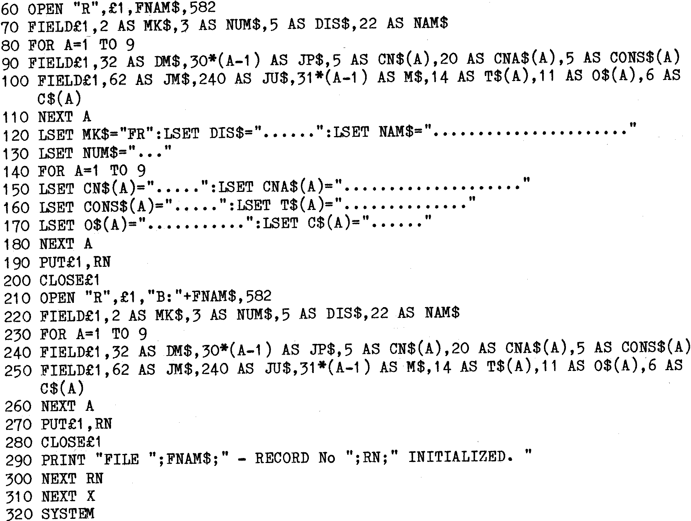

This example includes a number of the features previously described. The
used may not necessarily be the most elegant or concise, and the example
has been ‘made up’ to show the various points.
| Line 10 | – | Advisable for record purposes. |
| Line 20 | – | Clear Screen and print a Title. (Assumes Gemini
IVC
Screen.) |
| Line 30 | – | We will have 3 Data Files. AREA1.DAT to AREA3.DAT. |
| Line 40 | – | Construct File Name. |
| Line 50 | – | Set record counter for one File. |
| Line 60 | – | OPEN the File on drive “A”, RANDOM, 582 byte Records. |
| Line 70 | – | 110. Set up the Fields for drive ‘A’, (File £1). Note line 100
the use of JM$ and JU$. MBASIC does not like numbers over 255 in
Field statements, so the dummy has been split. (62+240=302.)
|
| Line 120 | – | 180. Set ALL fields (Except MK$) to periods. This allows a nice
display when Data entry program is run and current state of any
‘empty’ Fields is displayed. |
| Line 120 | – | Set MK$ to “FR”, to mark the record as FREE. |
| Line 190 | – | Save the initialized record to Drive “A”. |
| Line 200 | – | CLOSE File on Drive “A”. |
| Line 210 | – | 270. OPEN a File on Drive “B”, set up the FIELDS, and Save the
‘empty’ Record. N.B. No need to LSET again since the FIELDS are
identical. |
| Line 280 | – | CLOSE file again. |
| Line 290 | – | Keep the operator happy. |
| Line 300 | – | Continue until 100 Records written to the file.
|